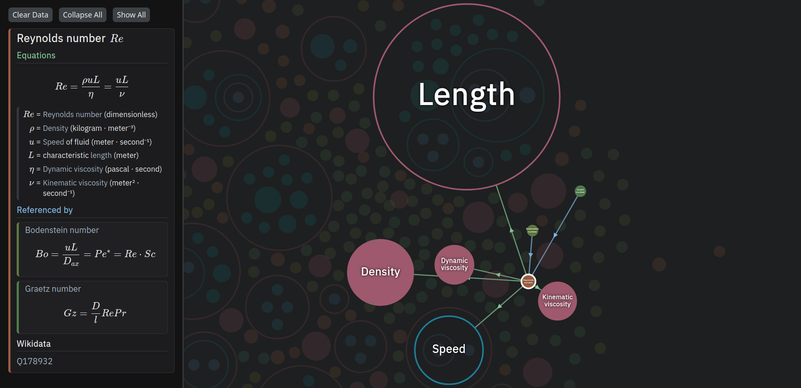
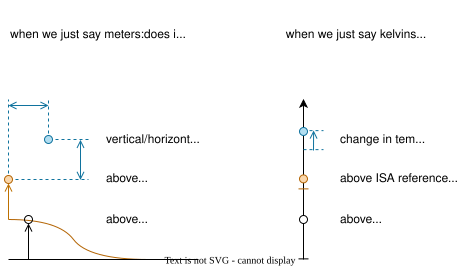

isqx¤


Documenting physical units in Python often relies on ambiguous docstrings or performance-heavy wrapper libraries that break interoperability.
isqx provides a comprehensive set of metadata objects based on the International System of Quantities (ISQ). These objects represent physical units (kg, knots), quantity kinds (mass, velocity) and make crucial distinctions between them (internal energy vs. work done vs. heat).
isqx objects are metadata-only: they do not wrap numerical types at runtime. Annotated[np.ndarray, isqx.M] should be treated as np.ndarray, ensuring zero performance overhead and immediate interoperability with external libraries.
It also comes with optional utilities like unit conversion, simplification and extensible formatting.
Installation¤
# with pip
pip install isqx
# with uv
uv add isqx
isqx has zero dependencies and is designed to be documentation-first. It can be used
without introducing a hard dependency on your project.
You can find more examples, search the list of units/quantity kinds and find the
API reference in the documentation.
An interactive visualisation of all quantity kinds can also be viewed here.

Visualisation of quantity kinds and equations related to the Reynolds number.
Tutorial: Documenting code with type annotations¤
Most libraries use docstrings for simplicity. isqx recommends incrementally adopting PEP 593.
First, define generic types that you will use throughout the codebase:
# isqx_types.py
from typing import Annotated, TypeVar
import isqx
_T = TypeVar("_T")
M = Annotated[_T, isqx.M]
K = Annotated[_T, isqx.K]
Pa = Annotated[_T, isqx.PA]
M[float] # is the same as a plain float.
M # a bare type is inferred by static type checkers as `Unknown`
dataclasses:
# in another file
from .isqx_types import M, K, Pa
def pressure_isa(altitude: M, isa_dev: K) -> Pa:
# `altitude` has `Unknown` type
...
# or, if you prefer stricter typing:
from numpy.typing import ArrayLike
def pressure_isa(altitude: M[ArrayLike], isa_dev: K[ArrayLike]) -> Pa[ArrayLike]:
# `altitude` now expects the type `ArrayLike` (not a wrapper over it!)
...
from dataclasses import dataclass
@dataclass
class GasState:
temperature: K
pressure: Pa
Annotated[T, x] is equivalent to T, there is no interoperability cost.
Internally, unit objects are defined by composing with each other:
J = (N * M).alias("joule") and N = (KG * M * S**-2).alias("newton").
You can also retrieve the annotations at runtime:
from typing import get_type_hints
def print_metadata(obj):
for param, hint in get_type_hints(obj, include_extras=True).items():
print(f"`{param}`: {hint.__metadata__[0]}")
print_metadata(pressure_isa)
# `altitude`: meter
# `isa_dev`: kelvin
# `return`: pascal
# - pascal = newton · meter⁻²
# - newton = kilogram · meter · second⁻²
print_metadata(GasState)
# `temperature`: kelvin
# `pressure`: pascal
# - pascal = newton · meter⁻²
# - newton = kilogram · meter · second⁻²
But there is a flaw in using units alone:

isqx encourages you to use a more abstract quantity kind, which can contain
arbitrary tags that store important metadata.
A quantity kind can take any unit system (MKS, imperial...): calling it with a
particular unit returns a isqx.Tagged expression:
from typing import Annotated, TypeVar
import isqx
_T = TypeVar("_T")
GeopAltM = Annotated[_T, isqx.aerospace.GEOPOTENTIAL_ALTITUDE(isqx.M)]
TempDevIsaK = Annotated[_T, isqx.aerospace.TEMPERATURE_DEVIATION_ISA(isqx.K)]
StaticPressurePa = Annotated[_T, isqx.STATIC_PRESSURE(isqx.PA)]
def pressure_isa(altitude: GeopAltM, isa_dev: TempDevIsaK) -> StaticPressurePa:
...
# altitude: meter['altitude', relative to `'mean_sea_level'`, 'geopotential']
# isa_dev: kelvin['static', Δ, relative to `288.15 · kelvin`]
# return: pascal['static']
# - pascal = newton · meter⁻²
# - newton = kilogram · meter · second⁻²
To create your own quantity kinds, see below.
Quick note on hard dependencies¤
If you intend to use isqx for documenting code only (without runtime features
like conversions or simplification
, which we will explore below), it is recommended to make isqx an
optional dependency
of your project instead:
uv add isqx --optional typing
isqx imports within the typing.TYPE_CHECKING block:
from __future__ import annotations # see PEP 563, PEP 649
from typing import Annotated, TYPE_CHECKING
if TYPE_CHECKING:
import isqx
FloatM = Annotated[float, isqx.M] # or put them in a separate module
def foo(x: FloatM): ...
# to inspect annotations at runtime in another module:
from typing import get_type_hints
import isqx
for param, hint in get_type_hints(
foo,
include_extras=True,
localns={"isqx": isqx} # add the location of your custom definitions (if any)
).items():
print(f"`{param}`: {hint.__metadata__[0]}")
# `x`: meter
ImportError if downstream
users decide not to install your_project[typing].
Tutorial: Utilities¤
So far, we have covered usecases for code documentation.
Units are immutable expression trees and isqx provides some runtime
utilities to transform the expression tree.
Simplification¤
The isqx.simplify function canonicalises it into a flat form:
>>> from isqx.usc import PSI
>>> print(PSI)
psi
- psi = lbf · inch⁻²
- lbf = pound · 9.80665 · (meter · second⁻²)
- pound = 0.45359237 · kilogram
- inch = 1/12 · foot
- foot = 0.3048 · meter
>>> from isqx import simplify, dimension
>>> print(simplify(PSI))
0.45359237 · 9.80665 · (1/12)⁻² · 0.3048⁻² · (kilogram · meter⁻¹ · second⁻²)
>>> print(dimension(simplify(PSI)))
L⁻¹ · M · T⁻²
Unit conversion¤
The convert function creates a callable that allow you to convert between
compatible units. Under the hood, it uses simplify to check dimensions and
computes the conversion factors once:
>>> from isqx import M, S, MIN, convert
>>> from isqx.usc import FT
>>> fpm_to_mps = convert(FT * MIN**-1, M * S**-1)
>>> fpm_to_mps
Converter(scale=0.00508)
>>> fpm_to_mps(7200.0)
36.576
>>> convert(M, FT, exact=True)(11000)
Fraction(13750000, 381)
>>> convert(FT * MIN**-1, M * S**-2) # velocity -> acceleration fails
isqx._core.DimensionMismatchError: cannot convert from `foot · minute⁻¹
- foot = 0.3048 · meter
- minute = 60 · second` to `meter · second⁻²`.
= help: expected compatible dimensions, but found:
dimension of origin: `L · T⁻¹`
dimension of target: `L · T⁻²`
jax.jit:
>>> import numpy as np
>>> fpm_to_mps(np.linspace(-1300, 1300, 10))
array([-6.604 , -5.13644444, -3.66888889, -2.20133333, -0.73377778,
0.73377778, 2.20133333, 3.66888889, 5.13644444, 6.604 ])
>>> import jax
>>> jax.grad(fpm_to_mps)(0.0)
Array(0.00508, dtype=float32, weak_type=True)
>>> from isqx import DBM, DBW, convert
>>> print(DBM)
dBm
- dBm = 10 · log₁₀(ratio[`watt` to `1 · milliwatt`])
- watt = joule · second⁻¹
- joule = newton · meter
- newton = kilogram · meter · second⁻²
>>> convert(DBW, DBM)
NonAffineConverter(scale=1.0, offset=29.999999999999996)
>>> convert(DBW, DBM)(10)
40.0
Note that converting between linear and logarithmic quantities are not supported. Representing quantities like attenuation (\(\text{dB}\text{ m}^{-1}\)) is permitted, but conversion of them is not yet implemented.
Formatting¤
The isqx.fmt function (called by isqx.Expr.__format__) by default
uses a isqx.BasicFormatter(verbose=True), but also supports customisation.
To use shorter symbols for example:
>>> from isqx import N, fmt, BasicFormatter
>>> f"{N}" == fmt(N, BasicFormatter(verbose=True))
True
>>> print(fmt(N, BasicFormatter(
... verbose=True,
... overrides={ # alias names
... "newton": "N",
... "kilogram": "kg",
... "meter": "m",
... "second": "s"
... },
... )))
N
- N = kg · m · s⁻²
Internally, the basic formatter uses isqx.Visitor to traverse each node in
post-order. You can pass in your own formatter as long as it adheres to the
isqx.Formatter protocol.
A \(\LaTeX\) formatter is WIP.
Tutorial: Creating your own units and quantity kinds¤
We follow the code-as-data principle: creating units and quantity kinds can be done effortlessly with pure Python:
>>> from fractions import Fraction
>>> import isqx
>>> SMOOT = ((5 + Fraction(7, 12)) * isqx.usc.FT).alias("smoot")
>>> print(SMOOT)
smoot
- smoot = 67/12 · foot
- foot = 0.3048 · meter
>>> print((SMOOT**-1 * isqx.M * SMOOT * isqx.M**-1)**2)
(smoot⁻¹ · meter · smoot · meter⁻¹)²
- smoot = 67/12 · foot
- foot = 0.3048 · meter
Note that expressions are represented exactly in the order you define it: no attempt is made to distribute exponents or combine terms unless you instruct it to.
As explored earlier, units alone are insufficient to describe a quantity kind. Consider we might want to represent:
| Common Units | Possible Quantity Kinds |
|---|---|
| \(\text{m}\), \(\text{ft}\), \(\text{in}\)... | geopotential altitude / geometric altitude / wingspan / chord length / radius / thickness / wavelength |
| \(\text{m}\text{ s}^{-1}\), \(\text{kt}\)... | indicated / true / ground speed |
| \(\text{J}\), \(\text{Btu}\) | internal / kinetic / potential / enthalpy / Gibbs free energy / work done / heat / moment of force |
| \(\text{W}\), \(\text{kWh}\) | instantaneous / RMS / peak-to-peak / time-averaged power |
| \(\text{mol}\) | amount of hydrogen / oxygen / (some arbitrary compound) |
| \(\text{USD}\), \(\text{EUR}\)... | nominal / real, capex / opex |
| - | radians / aspect ratio / Reynolds number <of some characteristic length> / coefficient of drag (zero-lift / lift-induced) |
And that particular quantity kind may also refer to a specific:
- inertial / body / stability reference frame
- x / y / z direction
- temperature / pressure at location A / B / C...
Tags¤
isqx allows you to constrain an existing unit with arbitrary tags using the
[] operator:
>>> import isqx
>>> MOL_H2_L = isqx.MOL["H_2", "liquid"]
>>> MOL_O2_G = isqx.MOL["O_2", "gas"]
>>> print(MOL_H2_L * MOL_O2_G**-1) # does not reduce to dimensionless!
mole['H_2', 'liquid'] · (mole['O_2', 'gas'])⁻¹
You can use any hashable object
including strings, frozen dataclasses, or even isqx units itself!
This is helpful when you want to represent something awkward like
Reynolds number with characteristic length = chord length.
isqx provides two important tags, Delta and OriginAt:
>>> import isqx
>>> print(isqx.K[isqx.DELTA]) # finite interval/difference in temperature
kelvin[Δ]
>>> print(isqx.J[isqx.INEXACT_DIFFERENTIAL, "heat"]) # "small change"
joule['inexact differential', 'heat']
- joule = newton · meter
- newton = kilogram · meter · second⁻²
>>> print(isqx.M[isqx.OriginAt("ground level")]) # elevation varies
meter[relative to `'ground level'`]
>>> print(isqx.K[isqx.DELTA, isqx.OriginAt(isqx.Quantity(130, K))])
kelvin[Δ, relative to `130 · kelvin`]
>>> print(isqx.DBU)
dBu
- dBu = 20 · log₁₀(ratio[`volt` relative to `0.6¹⸍² · volt`])
- volt = watt · ampere⁻¹
- watt = joule · second⁻¹
- joule = newton · meter
- newton = kilogram · meter · second⁻²
Quantity Kinds¤
The Tagged class is useful, but it forces downstream users to use a specific
unit system.
Instead, use the more generic isqx.QtyKind, a factory that produces isqx.Tagged:
>>> import isqx
>>> DIAMETER_PIPE = isqx.QtyKind(unit_si_coherent=isqx.M, tags=("diameter", "pipe"))
>>> print(DIAMETER_PIPE(isqx.M))
meter['diameter', 'pipe']
>>> print(DIAMETER_PIPE(isqx.usc.IN))
inch['diameter', 'pipe']
- inch = 1/12 · foot
- foot = 0.3048 · meter
>>> print(DIAMETER_PIPE(isqx.usc.LB))
isqx._core.UnitKindMismatchError: cannot create tagged unit for kind `('diameter', 'pipe')` with unit `pound
- pound = 0.45359237 · kilogram`.
expected dimension of kind: `L` (`meter`)
found dimension of unit: `M` (`pound
- pound = 0.45359237 · kilogram`)
Users can now select the unit system they prefer, while ensuring the dimensions are correct.